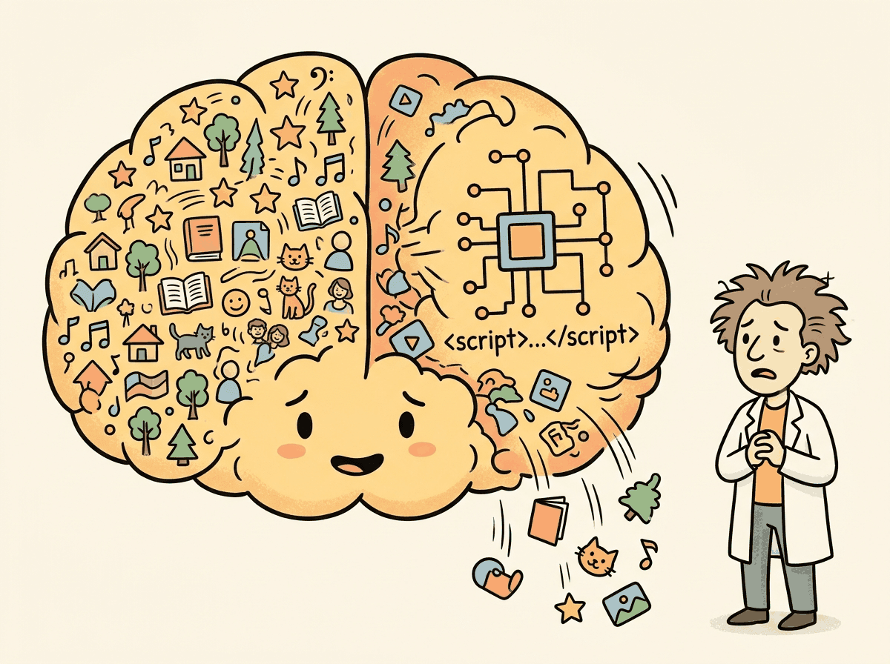
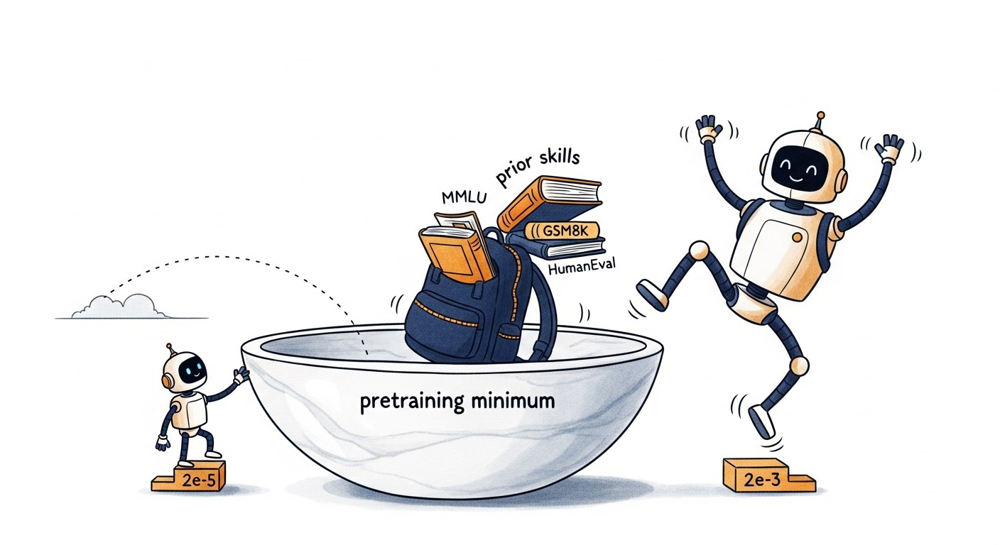

"The loss curve went down. The eval metrics went up. The model still produced nonsense. Welcome to supervised fine-tuning, where sanity checks are not optional."
Finetune, Sanity-Checking AI Agent
Supervised fine-tuning (SFT) is the core technique for teaching a pretrained model to follow instructions and produce specific outputs. In SFT, you train on input/output pairs where the loss is computed only on the output tokens (the assistant's response), not the input tokens (the user's prompt). Building on the data preparation from Section 16.2, this section walks through the complete SFT workflow using Hugging Face's TRL library, from loading the model to selecting hyperparameters, configuring gradient accumulation, and monitoring training with Weights & Biases and TensorBoard.
Prerequisites
This section builds on fine-tuning basics from Section 16.1: When and Why to Fine-Tune and data preparation covered in Section 16.2: Data Preparation for Fine-Tuning.

16.3.1 The SFT Training Loop
The original InstructGPT paper showed that 13,000 supervised examples were enough to turn a raw GPT-3 into something people actually wanted to talk to. That ratio, roughly one human-written demonstration per 13 million pretraining tokens, is why every fine-tuning team since has obsessed over data quality rather than data volume. SFT is the part of the recipe where the model finally learns manners, and like most lessons in manners, it works better with a few careful examples than a million sloppy ones.

The 2e-5 default is roughly 1/100 of typical pretraining rates, and the ratio matters more than the absolute number. Pretraining starts from random weights, so large steps explore the loss landscape productively. Fine-tuning starts inside a well-tuned local minimum: any step large enough to "leave" that minimum risks catastrophic forgetting, where the model degrades on capabilities it learned in pretraining. The empirical sweet spot keeps each step small enough that the cumulative drift stays within the basin of attraction. Rule of thumb: pretraining LR for 7B Llama-class models is around 3e-4, so SFT lives one to two orders of magnitude below it, and DPO/RLHF another order below that.
Warmup exists because Adam's per-parameter learning rate is lr / (sqrt(v) + eps), and v is the running average of squared gradients. At step 0, v is essentially zero, so the effective step size is enormous and biased by whatever gradients happen to come through first. Liu et al. (2020, "On the Variance of the Adaptive Learning Rate") proved this formally: without warmup, early Adam updates have unbounded variance and can poison normalization layers permanently. Linear warmup is the practical fix that lets v accumulate enough samples for the variance to stabilize. The 10% figure is rough; theory says you need roughly 2/(1-β2) steps, which is ~200 for Adam's default.
Log grad_norm alongside training loss at every step. Compute a 100-step rolling average and alert when the current norm exceeds 3× the average: this is the leading indicator of training instability. By the time loss diverges, many checkpoints of corrupted weights have been written. With early detection you can roll back to the last stable checkpoint, reduce the learning rate, and resume without restarting from scratch. The max_grad_norm clip configured in TRL is a guard rail, not a substitute for monitoring.
At its core, SFT modifies the standard causal language modeling objective in one important way: the loss is masked so that gradient updates come only from predicting the assistant's response tokens. The model still sees the full conversation during the forward pass (for context), but only the response tokens contribute to the loss. This teaches the model what to generate rather than what to predict about the user's input. visualizes this masking scheme. Code Fragment 16.3.2 shows this approach in practice.
Response masking is the single most important detail in SFT. If you accidentally compute loss on the user's input tokens as well, the model learns to predict user messages instead of assistant responses. The training loss will still decrease (the model gets better at predicting the whole conversation), but generation quality drops because the model is optimizing for the wrong objective. This is why TRL's SFTTrainer handles masking automatically; rolling your own training loop is an invitation to this subtle but devastating bug.
The loss masking strategy in SFT reflects a principle from educational psychology called the "desirable difficulty" framework (Bjork, 1994). The model sees the full conversation (including the user prompt) as context, but only receives a learning signal from the response tokens. This is analogous to how a student benefits from reading the problem statement (exposure) but only learns by practicing the solution (active retrieval). If the model were also trained to predict the prompt tokens, it would waste capacity learning to mimic user writing styles, a form of what cognitive scientists call "irrelevant encoding." The masking ensures that every gradient signal pushes the model toward the specific skill you want: generating good responses, not parroting questions. This same principle appears in curriculum design and instructional theory, where the distinction between "studying the question" and "practicing the answer" determines learning efficiency.
Fine-tuning does not reliably teach a model new factual knowledge. It adjusts behavior patterns: output style, format compliance, domain vocabulary, and instruction following. If you need the model to know specific facts (product catalogs, policy documents, knowledge bases), use retrieval-augmented generation (RAG) instead. Models that are fine-tuned to memorize facts tend to hallucinate confidently when asked about information adjacent to, but not in, the training set. Fine-tuning is for behavior; RAG is for knowledge.
16.3.1.1 Complete SFT Script with TRL
The following implementation (Code Fragment 16.3.2) shows this approach in practice.
# Configure PyTorch training with gradient accumulation and mixed precision
# These settings control memory usage and effective batch size
import torch
from datasets import load_dataset
from transformers import AutoModelForCausalLM, AutoTokenizer, BitsAndBytesConfig
from trl import SFTTrainer, SFTConfig
# 1. Load model and tokenizer
model_name = "meta-llama/Llama-3.1-8B-Instruct"
tokenizer = AutoTokenizer.from_pretrained(model_name)
# Ensure pad token is set (required for batched training)
if tokenizer.pad_token is None:
tokenizer.pad_token = tokenizer.eos_token
model = AutoModelForCausalLM.from_pretrained(
model_name,
torch_dtype=torch.bfloat16,
device_map="auto",
attn_implementation="flash_attention_2", # Faster training
)
# 2. Load and prepare dataset (ChatML/messages format)
dataset = load_dataset("json", data_files={
"train": "data/train.jsonl",
"validation": "data/val.jsonl"
})
# 3. Configure SFT training
sft_config = SFTConfig(
output_dir="./checkpoints/llama-sft",
# Core hyperparameters
num_train_epochs=3,
per_device_train_batch_size=4,
per_device_eval_batch_size=4,
gradient_accumulation_steps=8, # Effective batch = 4 * 8 = 32
learning_rate=2e-5,
weight_decay=0.01,
warmup_ratio=0.1, # 10% of steps for warmup
lr_scheduler_type="cosine",
# Sequence configuration
max_seq_length=2048,
packing=True, # Enable sequence packing
# Precision and optimization
bf16=True, # Use bfloat16 mixed precision
gradient_checkpointing=True, # Trade compute for memory
gradient_checkpointing_kwargs={"use_reentrant": False},
# Logging and evaluation
logging_steps=10,
eval_strategy="steps",
eval_steps=100,
save_strategy="steps",
save_steps=100,
save_total_limit=3, # Keep only 3 best checkpoints
load_best_model_at_end=True,
metric_for_best_model="eval_loss",
# Monitoring
report_to="wandb", # or "tensorboard"
run_name="llama-8b-sft-v1",
# Reproducibility
seed=42,
data_seed=42,
)
# 4. Create trainer and start training
trainer = SFTTrainer(
model=model,
args=sft_config,
train_dataset=dataset["train"],
eval_dataset=dataset["validation"],
processing_class=tokenizer,
)
# 5. Train
trainer.train()
# 6. Save the final model
trainer.save_model("./models/llama-sft-final")
tokenizer.save_pretrained("./models/llama-sft-final")Batch size interacts with gradient accumulation and GPU count to determine the effective training batch size. Code Fragment 16.3.6 computes this relationship and shows how gradient accumulation lets you simulate large batches on limited hardware.
# Calculating effective batch size
def compute_effective_batch_size(
per_device_batch_size: int,
gradient_accumulation_steps: int,
num_gpus: int = 1
) -> dict:
"""Calculate effective batch size and training throughput."""
effective_batch = per_device_batch_size * gradient_accumulation_steps * num_gpus
return {
"per_device_batch_size": per_device_batch_size,
"gradient_accumulation_steps": gradient_accumulation_steps,
"num_gpus": num_gpus,
"effective_batch_size": effective_batch,
"optimizer_steps_per_epoch": "num_examples / effective_batch_size",
}
# Common configurations
configs = [
(2, 16, 1), # Single GPU, small memory
(4, 8, 1), # Single GPU, moderate memory
(4, 4, 4), # 4 GPUs, distributed
(8, 2, 8), # 8 GPUs, large cluster
]
print(f"{'Per-device':>12} {'Grad Accum':>12} {'GPUs':>6} {'Effective BS':>14}")
print("-" * 50)
for pd_bs, ga, gpus in configs:
result = compute_effective_batch_size(pd_bs, ga, gpus)
print(f"{pd_bs:>12} {ga:>12} {gpus:>6} {result['effective_batch_size']:>14}")Mental Model: The Dial and the Dashboard. Think of SFT hyperparameters as dials on a machine. The learning rate dial controls how aggressively the model updates its weights: too high and it forgets everything it knew; too low and it barely learns anything new. The batch size dial controls how much data the model "sees" before each update. The key insight is that these dials interact: a larger effective batch size smooths the gradient signal, which means you can safely turn up the learning rate. Monitor your eval loss dashboard at every checkpoint. If the train loss drops but eval loss rises, you have turned the dials too far.
Code Fragment 16.3.8 compares three common learning rate schedules side by side.
# Visualizing different schedulers
from transformers import get_scheduler
import torch
def visualize_schedulers(
total_steps: int = 1000,
warmup_steps: int = 100,
learning_rate: float = 2e-5
):
"""Compare learning rate schedules side by side."""
schedules = {}
for sched_type in ["cosine", "linear", "constant_with_warmup"]:
# Create a dummy optimizer
param = torch.nn.Parameter(torch.zeros(1))
optimizer = torch.optim.AdamW([param], lr=learning_rate)
scheduler = get_scheduler(
name=sched_type,
optimizer=optimizer,
num_warmup_steps=warmup_steps,
num_training_steps=total_steps,
)
lrs = []
for step in range(total_steps):
lrs.append(optimizer.param_groups[0]["lr"])
optimizer.step()
scheduler.step()
schedules[sched_type] = lrs
# Print sample points
checkpoints = [0, 50, 100, 250, 500, 750, 999]
print(f"{'Step':>6} {'Cosine':>12} {'Linear':>12} {'Constant':>12}")
print("-" * 44)
for step in checkpoints:
print(f"{step:>6} {schedules['cosine'][step]:>12.2e} "
f"{schedules['linear'][step]:>12.2e} "
f"{schedules['constant_with_warmup'][step]:>12.2e}")
return schedules
schedules = visualize_schedulers()The following implementation (Code Fragment 16.3.6) shows this approach in practice.
import torch
# Sanity check: verify training is working correctly
def run_sanity_check(trainer, tokenizer, dataset, num_samples=3):
"""Quick sanity check before committing to a full training run."""
print("=" * 60)
print("SANITY CHECK")
print("=" * 60)
# 1. Check a few tokenized examples
print("\n1. Sample tokenized examples:")
for i in range(min(num_samples, len(dataset))):
example = dataset[i]
messages = example["messages"]
text = tokenizer.apply_chat_template(messages, tokenize=False)
tokens = tokenizer(text)["input_ids"]
print(f" Example {i}: {len(tokens)} tokens")
# Decode and check it looks reasonable
decoded = tokenizer.decode(tokens[:50])
print(f" First 50 tokens: {decoded[:100]}...")
# 2. Run a few training steps
print("\n2. Running 10 training steps...")
trainer.args.max_steps = 10
trainer.args.logging_steps = 1
result = trainer.train()
# 3. Check loss trajectory
logs = trainer.state.log_history
losses = [l["loss"] for l in logs if "loss" in l]
print(f" Loss trajectory: {[f'{l:.4f}' for l in losses]}")
if len(losses) >= 2:
if losses[-1] < losses[0]:
print(" [PASS] Loss is decreasing")
else:
print(" [WARN] Loss is not decreasing; check learning rate")
# 4. Generate a sample response
print("\n3. Sample generation:")
model = trainer.model
model.eval()
test_messages = [{"role": "user", "content": "Hello, how are you?"}]
inputs = tokenizer.apply_chat_template(
test_messages, return_tensors="pt", add_generation_prompt=True
).to(model.device)
with torch.no_grad():
output = model.generate(inputs, max_new_tokens=50, temperature=0.7)
response = tokenizer.decode(output[0][inputs.shape[1]:], skip_special_tokens=True)
print(f" Response: {response[:200]}")
print("\n" + "=" * 60)
print("Sanity check complete. Review above before full training.")
print("=" * 60)
Custom Training Loops with Accelerate
While TRL's SFTTrainer handles most fine-tuning needs, some workflows require custom training loops (for example, multi-task losses, custom gradient manipulation, or non-standard data pipelines). The Hugging Face accelerate library wraps PyTorch training code so it runs unchanged on a single GPU, multiple GPUs, or TPUs. You write standard PyTorch, then Accelerator handles device placement, gradient synchronization, and mixed precision. Code Fragment 16.3.11 shows the core pattern.
# pip install accelerate
from accelerate import Accelerator
from torch.utils.data import DataLoader
import torch
accelerator = Accelerator(mixed_precision="bf16")
# Standard PyTorch setup (model, optimizer, dataloader)
model = ... # your AutoModelForCausalLM
optimizer = torch.optim.AdamW(model.parameters(), lr=2e-5)
train_loader = DataLoader(dataset, batch_size=4, shuffle=True)
# Accelerate wraps everything for distributed + mixed precision
model, optimizer, train_loader = accelerator.prepare(
model, optimizer, train_loader
)
# Training loop: identical to single-GPU PyTorch
for batch in train_loader:
outputs = model(**batch)
loss = outputs.loss
accelerator.backward(loss) # replaces loss.backward()
optimizer.step()
optimizer.zero_grad()
# Launch with: accelerate launch --num_processes 4 train.pyWhy SFT is necessary but not sufficient for alignment. SFT teaches the model what format to produce (instruction-following, structured outputs, appropriate length). But it cannot teach the model which of several plausible responses is better, because SFT only sees correct examples with no comparative signal. This is exactly the gap that RLHF and DPO address in Chapter 20: they introduce preference signals that teach the model to distinguish better from worse among plausible options.
Always hold out 10 to 20% of your data for validation. Check eval loss after every epoch and stop training when it starts increasing (early stopping). Fine-tuning can overfit in as few as 2 to 3 epochs on small datasets.
Who: A senior ML engineer mentoring a junior engineer through their first SFT training run on Llama-2 13B for a customer service response generation task.
Situation: The junior engineer had prepared 15,000 training examples and was about to launch a full 3-epoch training run on 8 A100 GPUs, estimated to take 18 hours and cost $2,400.
Problem: The senior engineer noticed the junior had set the learning rate to 2e-4 (10x higher than recommended for a 13B model) and had not configured evaluation steps. Without monitoring, overfitting or divergence would not be detected until the full run completed.
Dilemma: They could fix the learning rate and hope for the best (risky with an untested dataset), add evaluation logging and watch the full run (18 hours of waiting), or run a quick sanity check on a small subset first to validate all settings.
Decision: They implemented a three-step sanity check protocol: (1) overfit on 20 examples for 50 steps to verify the model could learn, (2) run 200 steps on the full dataset with evaluation every 50 steps to check the loss curve, and (3) generate sample outputs at step 200 to qualitatively verify learning.
How: The sanity check took 12 minutes on a single GPU. Step 1 confirmed the model could memorize (training loss dropped to 0.1). Step 2 revealed the learning rate of 2e-4 caused loss oscillation after step 100. They reduced it to 2e-5, re-ran the 200-step check, and saw a smooth declining loss curve. Step 3 showed the model was already generating responses in the correct format.
Result: The 12-minute sanity check prevented what would have been a failed $2,400 training run. The corrected hyperparameters produced a model that achieved a 4.2/5 quality rating from human evaluators (compared to 3.8/5 for the baseline). The sanity check protocol became a mandatory pretraining step for the team.
Lesson: A 10-to-15-minute sanity check (overfit test, short loss curve, sample generation) before every full training run catches configuration errors that would otherwise waste hours of compute and thousands of dollars.
The learning rate for fine-tuning is typically 10 to 100 times smaller than for pretraining. If pretraining is learning to speak a language, fine-tuning is learning a regional dialect: you want to refine, not overwrite.
Research on selective fine-tuning identifies which layers and layer normalization matter most for specific tasks, enabling targeted weight updates that reduce catastrophic forgetting. The NEFTune technique (adding noise to embedding vectors during fine-tuning) has shown surprising effectiveness at improving generalization with minimal computational overhead.
An active frontier is understanding why SFT on very small, high-quality datasets (as few as 1,000 examples) can produce disproportionately large improvements in model behavior.
Objective
Fine-tune a small language model (SmolLM2-135M) on a custom instruction dataset using Hugging Face TRL's SFTTrainer, monitor training with loss curves, and evaluate the result by comparing base versus fine-tuned outputs.
What You'll Practice
- Loading and configuring a causal language model for SFT
- Preparing a ChatML dataset with proper formatting
- Setting hyperparameters: learning rate, batch size, gradient accumulation
- Running SFTTrainer with loss masking on prompt tokens
- Comparing before/after generation quality
Setup
The following cell installs the required packages and configures the environment for this lab.
This lab runs on a free Colab GPU (T4). No paid API keys required.
Steps
Step 1: Load the base model and capture baseline outputs
Load a small model that fits comfortably on a free Colab GPU. Save base model outputs for comparison after training.
# Load a small instruction-tuned model and capture baseline outputs
# for comparison after fine-tuning on custom data.
from transformers import AutoModelForCausalLM, AutoTokenizer
import torch
model_name = "HuggingFaceTB/SmolLM2-135M-Instruct"
tokenizer = AutoTokenizer.from_pretrained(model_name)
model = AutoModelForCausalLM.from_pretrained(
model_name, torch_dtype=torch.float16, device_map="auto"
)
if tokenizer.pad_token is None:
tokenizer.pad_token = tokenizer.eos_token
print(f"Model parameters: {model.num_parameters():,}")
# TODO: Generate a baseline response to a test prompt
# Use tokenizer.apply_chat_template() to format as chat
test_prompt = "Explain what a neural network is in simple terms."
messages = [{"role": "user", "content": test_prompt}]
# Save this output to compare after fine-tuningHint
Use tokenizer.apply_chat_template(messages, tokenize=False, add_generation_prompt=True) to format the prompt, then model.generate() with max_new_tokens=150.
Step 2: Prepare the training dataset
Load a small instruction dataset and format it for SFT training.
# Load an instruction dataset and format for SFT with chat templates.
# Uses 500 examples from the no_robots dataset for quick training.
from datasets import load_dataset
dataset = load_dataset("HuggingFaceH4/no_robots", split="train")
dataset = dataset.shuffle(seed=42).select(range(500))
print(f"Training examples: {len(dataset)}")
print(f"First example messages: {dataset[0]['messages'][:2]}")
# TODO: Define a formatting function for the chat template
def format_chat(example):
# Use tokenizer.apply_chat_template() on example["messages"]
# Return {"text": formatted_string}
pass
formatted_dataset = dataset.map(format_chat)
print(f"Formatted preview: {formatted_dataset[0]['text'][:300]}")Hint
Use tokenizer.apply_chat_template(example["messages"], tokenize=False, add_generation_prompt=False) and return {"text": result}.
Step 3: Configure and launch SFT training
Set up SFTTrainer with appropriate hyperparameters for a small model and short training run.
# Configure SFTTrainer with hyperparameters for a small model.
# Key choices: learning rate, batch size, gradient accumulation.
from trl import SFTTrainer, SFTConfig
# TODO: Fill in the training configuration
training_args = SFTConfig(
output_dir="./sft-smollm2",
num_train_epochs=3,
per_device_train_batch_size=4,
gradient_accumulation_steps=2,
# TODO: Set learning_rate, logging_steps, max_seq_length,
# fp16, warmup_ratio, save_strategy, report_to
)
trainer = SFTTrainer(
model=model,
args=training_args,
train_dataset=formatted_dataset,
processing_class=tokenizer,
)
result = trainer.train()
print(f"Training loss: {result.training_loss:.4f}")Hint
Good defaults: learning_rate=2e-5, logging_steps=10, max_seq_length=512, fp16=True, warmup_ratio=0.1, save_strategy="epoch", report_to="none".
Step 4: Plot the training loss curve
Visualize training loss to verify the model is learning properly.
# Plot training loss to verify convergence and spot overfitting.
# A healthy curve should decrease steadily without sharp spikes.
import matplotlib.pyplot as plt
losses = [e['loss'] for e in trainer.state.log_history if 'loss' in e]
steps = [e['step'] for e in trainer.state.log_history if 'loss' in e]
plt.figure(figsize=(10, 5))
plt.plot(steps, losses, 'b-', alpha=0.7)
plt.xlabel('Training Step')
plt.ylabel('Loss')
plt.title('SFT Training Loss')
plt.grid(True, alpha=0.3)
plt.savefig('sft_loss_curve.png', dpi=100)
plt.show()
print(f"Final loss: {losses[-1]:.4f}")Hint
Not all entries in log_history have a "loss" key (some are evaluation logs). Filter for entries containing "loss". The loss should decrease from ~2.5 to ~1.5 over 3 epochs.
Step 5: Compare base vs. fine-tuned outputs
Generate responses from the fine-tuned model and compare with baseline.
import torch
# Compare base vs. fine-tuned outputs on the same test prompts.
# Look for improved instruction-following and style consistency.
test_prompts = [
"Explain what a neural network is in simple terms.",
"Write a Python function to reverse a string.",
"What are three tips for giving a good presentation?",
]
for prompt in test_prompts:
messages = [{"role": "user", "content": prompt}]
formatted = tokenizer.apply_chat_template(
messages, tokenize=False, add_generation_prompt=True)
inputs = tokenizer(formatted, return_tensors="pt").to(model.device)
with torch.no_grad():
outputs = model.generate(
**inputs, max_new_tokens=200, temperature=0.7, do_sample=True)
response = tokenizer.decode(
outputs[0][inputs['input_ids'].shape[1]:], skip_special_tokens=True)
print(f"Prompt: {prompt}")
print(f"Response: {response}")
print("-" * 60)
Hint
For a fair comparison, save base model outputs before training (Step 1). Look for improvements in instruction following, formatting, and response quality.
Expected Output
- A training loss curve showing steady decrease from ~2.5 to ~1.5 over 3 epochs
- The fine-tuned model should produce more structured, instruction-following responses
- A saved model checkpoint in
./sft-smollm2(~300MB for SmolLM2-135M)
Stretch Goals
- Add a validation split and plot both training and validation loss to detect overfitting
- Experiment with learning rates (1e-5, 5e-5, 1e-4) and compare final loss values
- Try packing multiple short examples into a single sequence (
packing=Truein SFTConfig)
Complete Solution
# Complete SFT lab solution: load model, prepare data, train,
# plot loss, and compare outputs before and after fine-tuning.
from transformers import AutoModelForCausalLM, AutoTokenizer
from trl import SFTTrainer, SFTConfig
from datasets import load_dataset
import torch, matplotlib.pyplot as plt
model_name = "HuggingFaceTB/SmolLM2-135M-Instruct"
tokenizer = AutoTokenizer.from_pretrained(model_name)
model = AutoModelForCausalLM.from_pretrained(model_name, torch_dtype=torch.float16, device_map="auto")
if tokenizer.pad_token is None:
tokenizer.pad_token = tokenizer.eos_token
# Capture baseline
base_outputs = {}
for p in ["Explain what a neural network is in simple terms.",
"Write a Python function to reverse a string.",
"What are three tips for giving a good presentation?"]:
msgs = [{"role": "user", "content": p}]
fmt = tokenizer.apply_chat_template(msgs, tokenize=False, add_generation_prompt=True)
inp = tokenizer(fmt, return_tensors="pt").to(model.device)
with torch.no_grad():
out = model.generate(**inp, max_new_tokens=200, temperature=0.7, do_sample=True)
base_outputs[p] = tokenizer.decode(out[0][inp['input_ids'].shape[1]:], skip_special_tokens=True)
# Prepare data
dataset = load_dataset("HuggingFaceH4/no_robots", split="train").shuffle(seed=42).select(range(500))
def format_chat(ex):
return {"text": tokenizer.apply_chat_template(ex["messages"], tokenize=False, add_generation_prompt=False)}
formatted = dataset.map(format_chat)
# Train
args = SFTConfig(output_dir="./sft-smollm2", num_train_epochs=3, per_device_train_batch_size=4,
gradient_accumulation_steps=2, learning_rate=2e-5, logging_steps=10, max_seq_length=512,
fp16=True, warmup_ratio=0.1, save_strategy="epoch", report_to="none")
trainer = SFTTrainer(model=model, args=args, train_dataset=formatted, processing_class=tokenizer)
trainer.train()
# Plot
losses = [e['loss'] for e in trainer.state.log_history if 'loss' in e]
steps = [e['step'] for e in trainer.state.log_history if 'loss' in e]
plt.figure(figsize=(10,5)); plt.plot(steps, losses, 'b-'); plt.xlabel('Step'); plt.ylabel('Loss')
plt.title('SFT Loss'); plt.grid(True, alpha=0.3); plt.savefig('sft_loss_curve.png'); plt.show()
# Compare
for p in base_outputs:
msgs = [{"role":"user","content":p}]
fmt = tokenizer.apply_chat_template(msgs, tokenize=False, add_generation_prompt=True)
inp = tokenizer(fmt, return_tensors="pt").to(model.device)
with torch.no_grad():
out = model.generate(**inp, max_new_tokens=200, temperature=0.7, do_sample=True)
ft = tokenizer.decode(out[0][inp['input_ids'].shape[1]:], skip_special_tokens=True)
print(f"Prompt: {p}\nBASE: {base_outputs[p][:200]}\nFINE-TUNED: {ft[:200]}\n{'='*50}")- SFT loss is masked: only response tokens contribute to the loss; prompt tokens are labeled -100 and ignored during backpropagation.
- Start with 2e-5 learning rate for 7B+ models, use cosine annealing with 5% to 10% warmup, and train for 2 to 3 epochs as a baseline.
- Gradient accumulation lets you simulate large batch sizes on limited hardware; effective batch size = per_device_batch x grad_accum_steps x num_gpus.
- Enable FlashAttention 2 and gradient checkpointing to maximize training efficiency and minimize memory usage.
- Monitor both train and eval loss at every checkpoint; a growing gap signals overfitting and calls for early stopping or more regularization.
- Run a sanity check (10 to 20 steps on a small subset) before every full training run to catch data format issues, OOM errors, and learning rate problems early.
Show Answer
Show Answer
Show Answer
load_best_model_at_end=True). (2) Add regularization (increase weight_decay to 0.05 to 0.1). (3) Reduce the number of epochs. (4) Augment the training dataset with more diverse examples. (5) Try a lower learning rate to slow the rate of weight updates.Show Answer
Show Answer
Exercises
Describe the supervised fine-tuning (SFT) training loop at a high level. What loss function is used, and why is the loss masked to only the assistant's response tokens?
Answer Sketch
SFT uses the standard causal language modeling loss (Section 4.1) on the next token prediction. The loss is masked so that only the assistant response tokens contribute to the gradient. This is because we want the model to learn to generate good responses, not to predict the user's input (which is given). Without masking, the model wastes capacity learning to predict the instruction text, which does not improve generation quality.
Explain the typical hyperparameter ranges for SFT: learning rate, batch size, number of epochs, and warmup ratio. Why is a lower learning rate preferred for fine-tuning versus pretraining?
Answer Sketch
Typical ranges: learning rate 1e-5 to 5e-5 (vs. 1e-4 to 3e-4 for pretraining), batch size 4 to 32, epochs 1 to 3, warmup ratio 0.03 to 0.1. Lower learning rates are preferred because the pretrained weights already encode valuable knowledge; large updates would destroy these representations (catastrophic forgetting). The goal is to gently adapt the existing knowledge rather than overwrite it.
Write the key code snippets for fine-tuning a model using Hugging Face's SFTTrainer: loading the model, configuring training arguments, and launching training.
Answer Sketch
Load: model = AutoModelForCausalLM.from_pretrained('meta-llama/Llama-3-8B'). Configure: args = SFTConfig(output_dir='./output', num_train_epochs=2, per_device_train_batch_size=4, learning_rate=2e-5, warmup_ratio=0.05). Train: trainer = SFTTrainer(model=model, args=args, train_dataset=dataset, processing_class=tokenizer); trainer.train().
During SFT, your training loss decreases to 0.3 but validation loss starts increasing after epoch 1. Diagnose the issue and propose three mitigations.
Answer Sketch
Diagnosis: the model is overfitting to the training data, memorizing examples rather than learning generalizable patterns. Mitigations: (1) Reduce training to 1 epoch (early stopping at the validation loss minimum). (2) Increase dataset size with synthetic data augmentation. (3) Use a lower learning rate or add weight decay regularization. (4) Switch to LoRA, which constrains the number of trainable parameters and acts as an implicit regularizer.
Explain the concept of sequence packing for SFT efficiency. Why does packing multiple short examples into one sequence improve GPU utilization, and what precaution is needed for attention masking?
Answer Sketch
Without packing, short sequences are padded to the batch's maximum length, wasting compute on padding tokens. Packing concatenates multiple short examples into one sequence up to the maximum length, eliminating padding waste. Precaution: the attention mask must prevent tokens from one example from attending to tokens from another example within the same packed sequence. This requires a block-diagonal attention mask. Packing can improve training throughput by 2 to 5x for datasets with variable-length examples.
What Comes Next
In the next section, Section 16.4: Fine-Tuning via Provider APIs, we explore fine-tuning through provider APIs, using hosted services from OpenAI, Anthropic, and others.